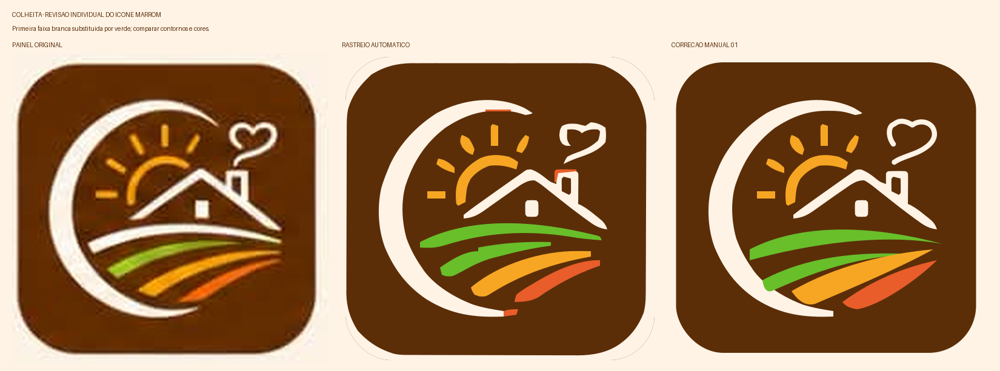
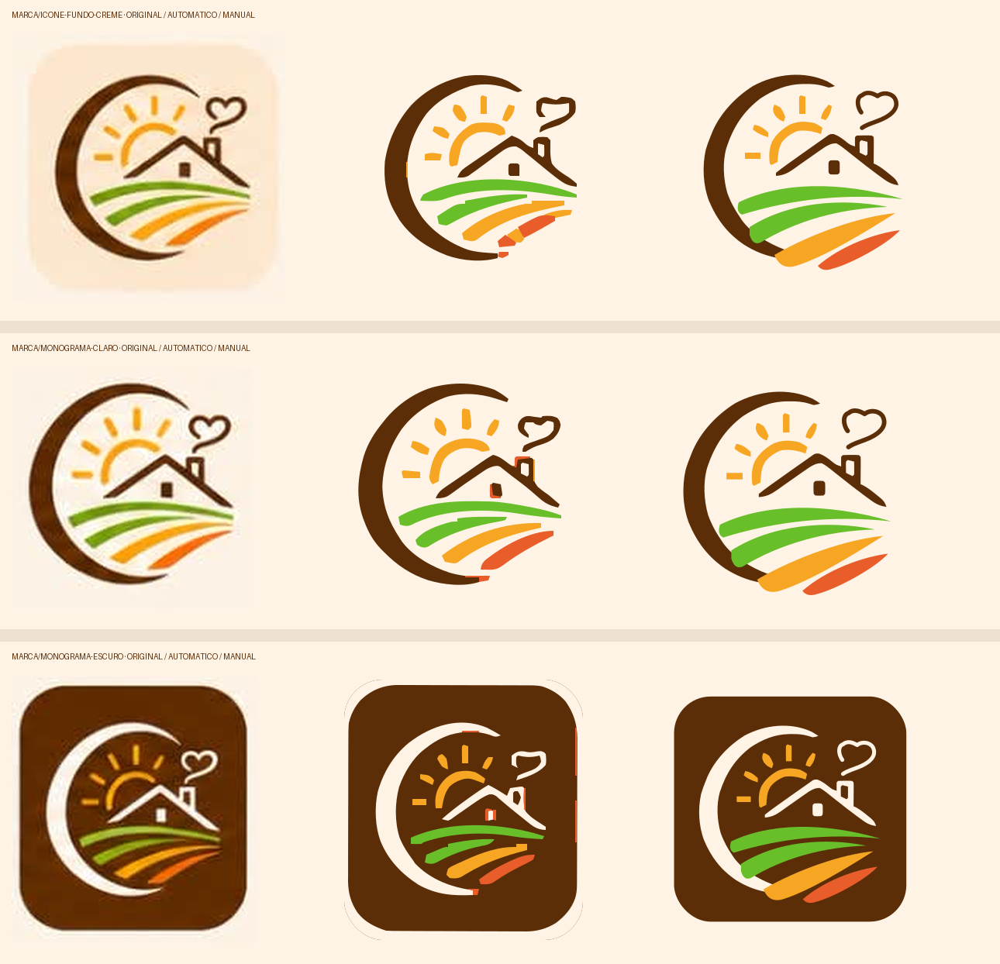

Refinamento peça por peça
Comparação do painel original, extração automática e correção manual. A marca aprovada permanece intocada.
01 · Ícone de fundo marrom

Em revisão: coração, contorno, ruídos de cor e duas faixas verdes no campo. Este SVG ainda não substitui a marca oficial.
02 · Ícone fundo creme e monogramas

As variantes agora usam o mesmo desenho de base, com tratamento de fundo e cor consistente. Ainda exigem inspeção visual antes de serem chamadas de oficiais.
SVG fundo creme · SVG monograma claro · SVG monograma escuro